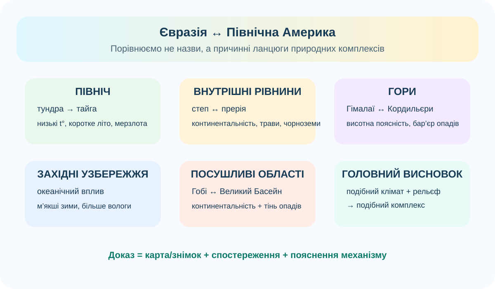

0. Вхід у практикум
Поля потрібні, щоб результат наприкінці мав підпис. Магії немає, просто нормальна організація.
1. Карта-розвідка 2 бали
На карті позначені пари територій, які варто порівняти. Відкрийте маркери й знайдіть дві пари природних комплексів-аналогів.
Пара А
Чому це аналоги?
Пара Б
Чому це аналоги?
2. Фото-доказ: степ ≠ прерія, але механізм схожий 2 бали
 Казахстанський степ
Казахстанський степРеальне фото ландшафту Бухар-Жирауського району, Казахстан.
 Прерія Великих рівнин
Прерія Великих рівнинРеальний ландшафт Північної Дакоти, США.
Завдання: за фото й картою сформулюйте одну подібність і одну відмінність. Заборонена відповідь «там трава і там трава» — вона правдива, але майже нічого не доводить.
3. Матриця природних комплексів 3 бали
Заповніть щонайменше три рядки. У кожному має бути не просто назва, а ланцюг «чинник → прояв у природі».
| Пара | Спільне | Відмінність | Чому? |
|---|---|---|---|
| Тундра Євразії ↔ Канадська Арктика | |||
| Тайга Сибіру ↔ бореальні ліси Канади | |||
| Степ ↔ прерія | |||
| Гімалаї ↔ Кордильєри | |||
| Гобі ↔ Великий Басейн |
4. Супутниковий контроль 1 бал
NASA Earth Observatory
Бореальні ліси простягаються через північ Євразії та Північної Америки — це один із найкращих прикладів зональної подібності.
Матеріал NASA5. Карта причин, а не список назв

Схема допомагає перевірити логіку, але не замінює Ваші власні докази.
6. Підсумковий CER 2 бали
Теза
Докази
Пояснення
Домашнє завдання
§58. Оберіть ще одну пару природних комплексів Євразії та Північної Америки, якої не було у Вашій матриці. Додайте 1 карту/супутниковий доказ і 3–4 речення пояснення.